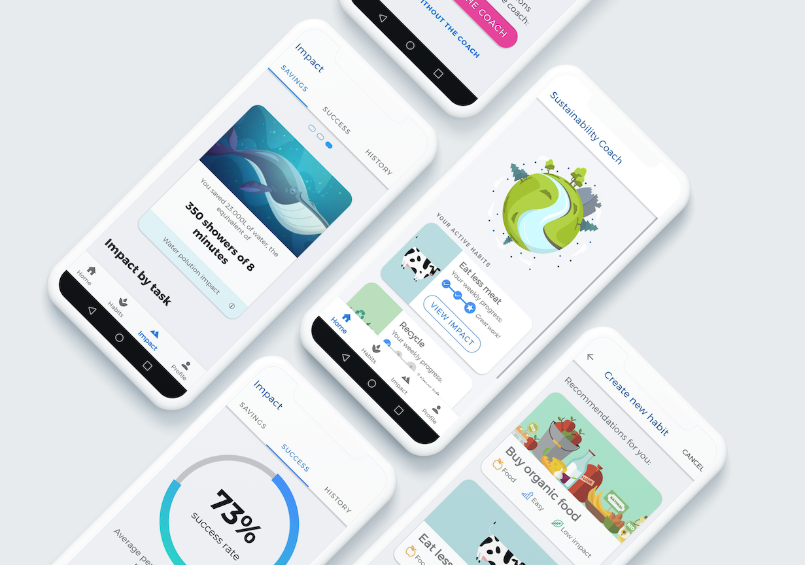

Project for a course in HCI project. It consisted of a process of making interviews, finding a need, creating personas and task scenarios, making a user journey map, a low fidelity prototype and finally program the prototype using Android Studio. Worked in collaboration with other UPM students: Lukas Bruckner, Vincent Giardina and Carlos Maya.
All of us feel more and more concerned about the environmental crisis that we are facing. But it's kind of hard to understand and furthermore to implement sustainable habits when we are overcrowded by "eco to-dos". Here we wanted to inspire people in their daily lives and give relief to their actions by representing the impact through our sustainability coach. What that means is saving 15 liters of water while showering when eating a steak for the lunch requires 3000.
The Sustainability Coach assists people in their daily lives for living a sustainable life. The main goal is to foster sustainable habits through the new system. It can adjust to the user’s preferences by asking about his priorities and goals. The user might be able to plan his “sustainability journey” according to his schedule and life situation. Based on this, the system suggests small habits. The user is constantly asked to provide feedback about these habits and give detailed information about if and how he did the tasks.
We defined the context of use based on in-shop and street interviews. We targeted people who are aware and consumer responsibly. To meet them, our interviews took place in strategic places like a bio shop, a recycled clothing store and at the end of demonstration for the planet. We met around 40 people and after filtering through the people, we released 18 useful interviews. Plus, we realised 4 contextual inquiries to identify the most relevant profiles
We learned a lot from the habits of consumers in Madrid. Some results were very interesting, like the difference of understanding between people. In general, interviewees said that they felt very concerned by ecological issues and acts to be more sustainable. Almost all of them give themselves grades between 7 and 9 for their behaviour. In practice, the actions were much more contrasted. For some of them the only eco-friendly act that they perform is the recycling, while others are radically vegetarian.
The most important barriers to be more sustainable are: the logistic, the cost, the time-consumption, and the lack of knowledge. Most common eco-friendly activities are: recycling and conscious consumption. Vegetarianism was rarely considered in the group of the Spanish people we interviewed. Therefore, a better consumption is considered: less or better meat, organic food, or local products.

From that user research, we had information to build two different prototypes: one for desktop and one for mobile. We designed a low-fi prototype for each of them and evaluated them.

Both prototypes were tested using both quantitative and qualitative methods. The user followed a task scenario while a facilitator helped him/her in the process. We always had an observer in the team following the behaviour of the tester. The experiment was followed by a questionnaire interview with the participants. Finally we asked him/her to fill-in a SUS questionnaire. From there, the mobile prototype was chosen and the mistakes found during the testing were improved in design.

The high fidelity prototype was of course followed with some tests: interviews with tests, SUS questionnaire, and UEQ questionnaire (results above). Focussing on the 3 worst results of the EUQ, they make sense following the observations of the tester. Novelty: the app was not considered as "cutting-edge" and that's true we prioritised the standards over the experiment. Dependability: many users expected more features from the app. Perspicuity: users preferred intuitive UI rather than long texts which were used too often.
Here, the app aimed to be efficient and effective because of the frame in which we worked on it. Therefore, I wish we had the room for more experiments and further designing. I believe that a the ecology is social. It would have been so much more interesting to have been able to test social interactions in the app. Even more, the ecology is not always fun, it could have been fun to explore the gamification or even a photo oriented application.
Here you have the APK to test the app: https://www.dropbox.com/s/iedxac5ndihz3ki/sustainability_coach.apk